The shipped brace keyframe seats the forearm pad +2.1 mm above the compiled 0.985 m slab and is never re-solved when the slab moves. `brace_pose_track` re-solves it, and this is what that buys.
The baseline sweep measured the shipped controller over slab height and changed nothing: no cost weight, no residual, no strategy JSON, no keyframe, no robot–table standoff. It completes 3/3 seeds at 0.985 m and 1.035 m and 0/3 at 0.785 m, 0.885 m and 1.085 m, with three distinct failure modes. This page answers the question that baseline was built to ask: what is the minimal change that makes table-height generalisation work?
Minimal is counted in numbers touched. An existing model numeric beats a new weight, a weight beats a new residual, a new residual beats moving the robot. A result counts only if it widens the window on 3 seeds per height at a fixed thread count and costs no completions at 0.985 m.
Each rung of the ladder names a model <key>, and the Posture and Control costs track that pose. At forearm_brace_lean the left forearm pad sits +2.1 mm above the compiled face. The pad's own drive target, brace_press_z, is derived from the live table_surface_pos sensor and tracks the slab. At the compiled height the two agree to two millimetres; at any other height they disagree by the height error, and the disagreement is what Posture (w60 over 27 joints, plus the leg-chain amplifier) spends the brace rung defending.
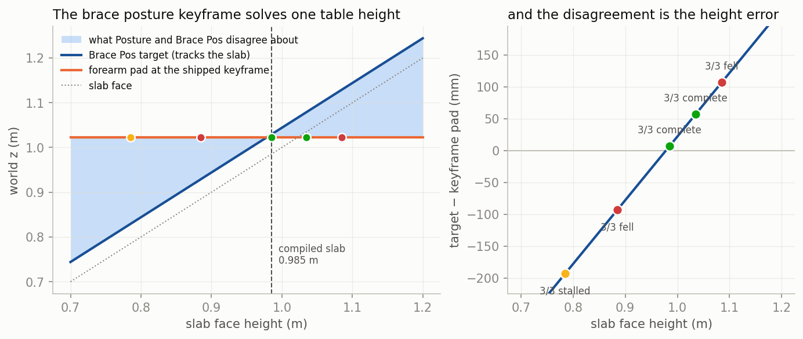
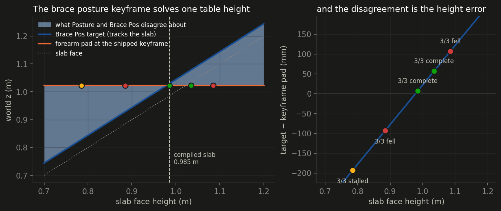
The keyframe's own header records the pose being hand-solved (“--surface 0.955 --min-x 0.34”) the last time the slab moved, and notes that the previous pose left the pad 8.5 cm under the new surface. The re-solve happened once, by hand, and no tool in the repo does it.
For each face height, solve for the pose nearest the shipped keyframe that shifts both brace pads by (face − compiled face) in z while holding both feet exactly where and how the keyframe holds them. Constraining the elbow pad alone leaves the wrist free and the nearest solution parks the hand 122 mm inside a 0.785 m slab; two points make the forearm rigid, which is what “flat on the table” means.
| table face | base pitch (deg) | hip pitch (deg) | base z (m) | CoM ahead of midfoot (mm) | shoulder above face (mm) |
|---|---|---|---|---|---|
| 0.685 m | 58.0 | -92.5 | 0.893 | +18 | +226 |
| 0.785 m | 47.1 | -82.0 | 0.917 | +22 | +234 |
| 0.885 m | 36.1 | -69.1 | 0.937 | +40 | +234 |
| 0.985 m | 25.9 | -53.7 | 0.964 | +53 | +228 |
| 1.085 m | 17.2 | -41.4 | 0.982 | +41 | +204 |
| 1.185 m | 11.1 | -33.0 | 0.984 | +15 | +161 |
Base pitch runs from 58° at the low end to 11° at the high end while base height moves 91 mm. The adjustment is a bow, not a squat, and it is nearly linear in slab height.
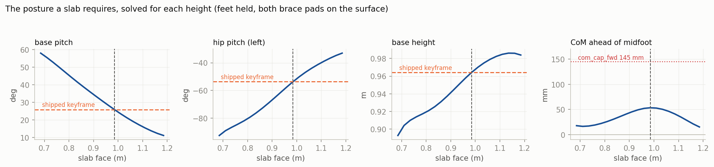
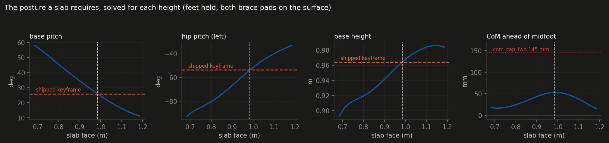
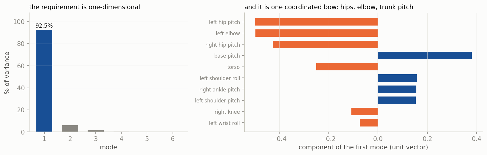
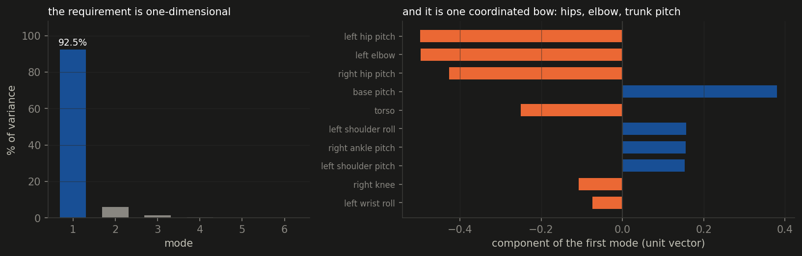
forearm_brace_lean) difference the model ships is 0.43, so blending two existing keyframes cannot produce it. The direction has to be solved for.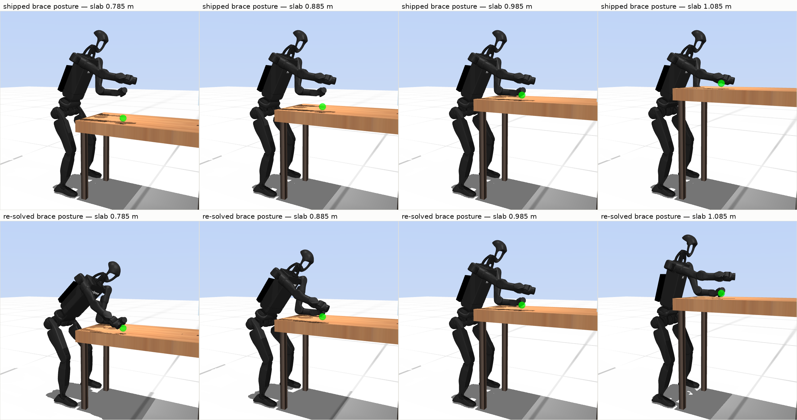
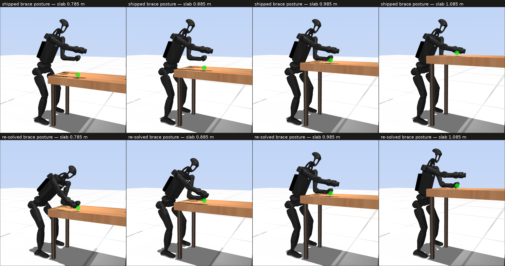
With the table moved out of reach so it can carry nothing, the CoM ground projection of the re-solved pose sits 80 to 103 mm inside the foot support polygon — the convex hull of the robot's real floor contacts — at every height from 0.685 to 1.185 m. The margin is smallest at the compiled height, where the controller works. Nothing about the required poses is near the edge of balance, so a failure to reach one is a control problem rather than an infeasible target.
Hold the trunk at the shipped brace posture and let only the bracing arm move, with both pads required to reach face height and their x and y free — the slab is 1.18 m deep and 0.595 m wide, so the pad may sit anywhere on it. The arm can seat on any slab at or above 0.970 m and on none below it.
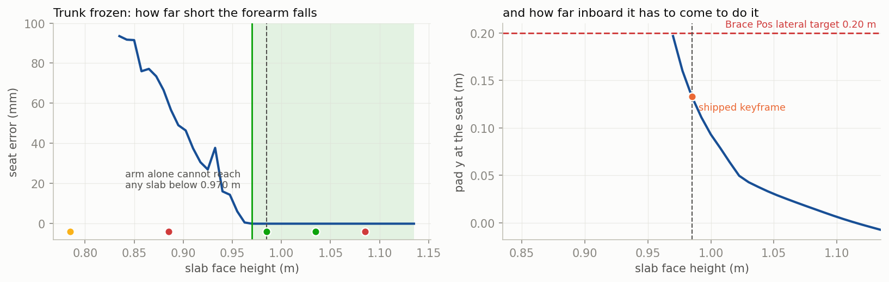
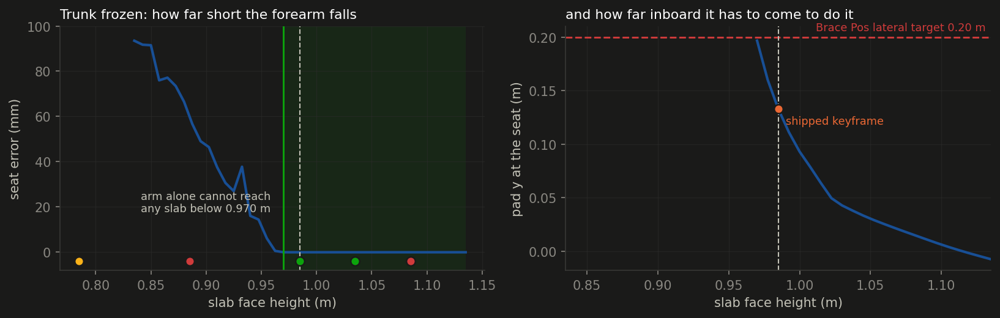
That splits the two failing ends. Below 0.970 m the arm cannot reach the wood at all, so no weight and no gain on any cost can seat it — only a deeper bow can, and nothing tells the trunk to bow deeper. Above it the arm can reach 1.135 m with the trunk frozen, so the high-end failure is not a reach limit; what runs out there is lateral. Seating a higher slab drags the pad inboard from y = 0.133 m at the keyframe toward the centreline, while the Brace Pos lateral target stays at 0.20 m, so the vertical and lateral demands pull the same arm in different directions.
brace_pose_track (model numeric, 0 = off = byte-identical). When Table H moves the slab, lean::TransitionLocked re-solves forearm_brace_lean, forearm_brace_reach and forearm_brace_release against the new face — damped least squares over the floating base, both legs, the waist and the bracing arm, with the two pads and both feet as constraints, run once per height change. It touches one numeric and no weight, no residual and no standoff.
build_cmake/bin/lean_bench --task "Lean H12 Magpie" --strategy 25 \ --table_h 0.885 --seed 0 --total_time 75 --threads 6 --spp 3 \ --pose_track 1 --out r.csv studies/table_height/retarget.py --face 0.885 # the same solve, offline studies/table_height/sweep_ab.py --out studies/table_height/runs/ab
The offline twin (studies/table_height/retarget.py) runs the same arithmetic out of process. The two solvers land within 1.0° of base pitch and 1 mm of base height of each other at every height tested; both satisfy the pad constraints to better than 0.2 mm, and they differ only in where the null-space pull leaves them.
Paired A/B from one binary. For each (height, seed) cell the two arms run back to back, --pose_track 0 then --pose_track 1, so machine state drifts through both equally. Three seeds per height, --threads 6, --spp 3 (33 Hz plan rate, the rate the deploy node runs at), 75 s cap, serial under a CPUQuota=700% scope.
| table face | complete off | complete on | in contact off | in contact on | forearm peak off (N) | forearm peak on (N) | t end off (s) | t end on (s) |
|---|---|---|---|---|---|---|---|---|
| 0.785 m | 0 / 3 | 0 / 3 | 0% | 8% | 0 | 57 | 75 | 75 |
| 0.885 m | 0 / 3 | 0 / 3 | 13% | 21% | 146 | 226 | 45 | 42 |
| 0.985 m | 3 / 3 | 3 / 3 | 41% | 40% | 213 | 268 | 45 | 49 |
| 1.035 m | 2 / 3 | 1 / 3 | 10% | 30% | 241 | 144 | 43 | 30 |
| 1.085 m | 0 / 3 | 0 / 3 | 0% | 34% | 0 | 36 | 29 | 33 |
The window does not move. Both arms complete 3/3 at the compiled height and 0/3 at 0.785 m, 0.885 m and 1.085 m. At 1.035 m the arms read 2/3 and 1/3, which at three seeds is one run and is not a difference. What does move is the brace itself: the forearm spends more of the rung in contact at every failing height, and at 1.085 m it goes from carrying nothing at all to 34% of the rung with a real peak load. The pose reaches the slab. The run still does not survive, so the block is downstream of the seat.
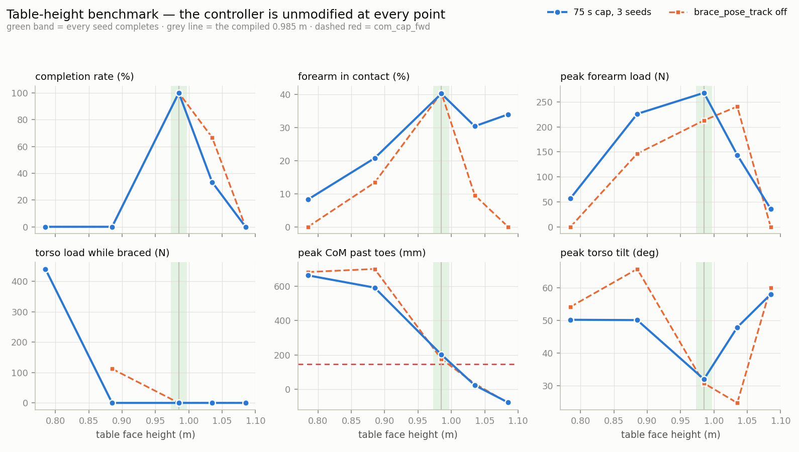
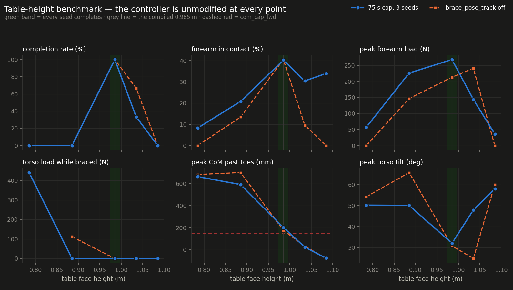
| hypothesis | verdict | on what |
|---|---|---|
| H1 — re-solving the keyframes widens the window | not supported | no failing height gained a completion. Contact did improve at 0.785 m, 0.885 m, 1.085 m, so the pose reaches the slab without the run surviving; the block is downstream of the seat. |
| H2 — it costs nothing at the compiled height | held | 3/3 complete with the retarget on against 3/3 off at 0.985 m. The height block only fires when the slab moves, so at the compiled height the solver never runs and the keyframes are the shipped bytes. |
| H3 — not sufficient on its own at the low end | held | 0.785 m, 0.885 m still complete 0 of 3 with the pose correct, so the keyframe is not the whole story below the compiled height |
Every failing height enters rung 2 — the targeting rung — and never leaves it. That rung carries reach_target_table [0.55, 0.04, 0.15], so TransitionLocked builds its advance target from the slab (near edge + 0.55 in x, table centre − 0.04 in y, face + 0.15 in z) and advances when the RIGHT gripper jaw tip holds within target_distance_tolerance = 70 mm of it for 2 s. Cost and gate grade the same point, and the repo's own note that this tolerance is dead on every lean phase stopped being true when the targeting rungs landed.
| run | outcome | closest (mm) | dx | dy | dz |
|---|---|---|---|---|---|
| 0.785 m / seeded / s0 | stalled | 481 | +454 | -53 | -150 |
| 0.885 m / ab-on / s0 | fell | 180 | +115 | -67 | -121 |
| 0.885 m / lead-on / s0 | fell | 117 | +25 | +9 | -114 |
| 0.885 m / seeded / s0 | fell | 258 | +238 | -42 | -89 |
| 0.985 m / ab-off / s0 | complete | 17 | +15 | -5 | -7 |
| 0.985 m / ab-on / s0 | complete | 22 | +22 | +5 | -4 |
| 0.985 m / lead-off / s0 | complete | 21 | +19 | +4 | -6 |
| 0.985 m / lead-on / s0 | complete | 36 | +28 | +7 | -21 |
| 0.985 m / seeded / s0 | complete | 8 | +6 | +2 | -3 |
| 1.035 m / ab-off / s0 | complete | 25 | -25 | +5 | +2 |
| 1.035 m / ab-on / s0 | complete | 32 | -32 | +5 | -5 |
| 1.035 m / seeded / s0 | complete | 13 | -12 | +2 | -0 |
| 1.085 m / ab-off / s0 | fell | 154 | -138 | -22 | -64 |
| 1.085 m / ab-on / s0 | fell | 161 | -149 | -34 | -50 |
| 1.085 m / seeded / s0 | fell | 176 | -134 | -54 | -101 |
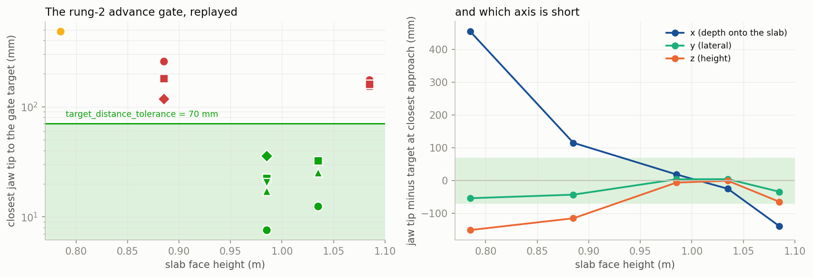
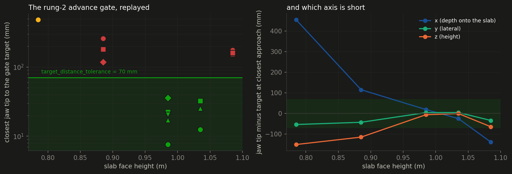
face + 0.15 m term while nothing about the reaching arm does.Both levers so far act on x. Neither acts on z, and z is short by about a hundred millimetres at both failing ends — because the retarget deliberately freezes the reaching arm at the authored pose while the trunk follows the slab.
lean.cc defines Brace Reach Lead: a one-sided charge on the base travelling forward past brace_lead_x0 (0.24 m), with the ceiling opening by brace_lead_gain (0.10 m) per unit of measured brace load. Below that line it is exactly zero, which is why its comment says it cannot starve the press the way raising Balance did. Its weight is 0.0 in every strategy JSON in this repo, so the term has never been on.
| run | outcome | peak base x (m) | seconds past the line |
|---|---|---|---|
| 0.785 m / ab-off / s0 | fell | 0.777 | 13.2 |
| 0.785 m / ab-on / s0 | stalled | 0.642 | 72.5 |
| 0.785 m / lead-off / s0 | stalled | 0.523 | 69.0 |
| 0.785 m / lead-on / s0 | stalled | 0.563 | 69.4 |
| 0.785 m / seeded / s0 | stalled | 0.584 | 52.1 |
| 0.885 m / ab-off / s0 | fell | 0.257 | 2.2 |
| 0.885 m / ab-on / s0 | fell | 0.807 | 12.3 |
| 0.885 m / lead-off / s0 | fell | 0.729 | 7.6 |
| 0.885 m / lead-on / s0 | fell | 0.425 | 35.7 |
| 0.885 m / seeded / s0 | fell | 0.440 | 11.2 |
| 0.985 m / ab-off / s0 | complete | 0.292 | 2.3 |
| 0.985 m / ab-on / s0 | complete | 0.322 | 5.7 |
| 0.985 m / lead-off / s0 | complete | 0.290 | 1.3 |
| 0.985 m / lead-on / s0 | complete | 0.290 | 2.2 |
| 0.985 m / seeded / s0 | complete | 0.304 | 2.0 |
| 1.035 m / ab-off / s0 | complete | 0.215 | 0.0 |
| 1.035 m / ab-on / s0 | complete | 0.197 | 0.0 |
| 1.035 m / seeded / s0 | complete | 0.218 | 0.0 |
| 1.085 m / ab-off / s0 | fell | 0.200 | 0.0 |
| 1.085 m / ab-on / s0 | fell | 0.200 | 0.0 |
| 1.085 m / seeded / s0 | fell | 0.196 | 0.0 |
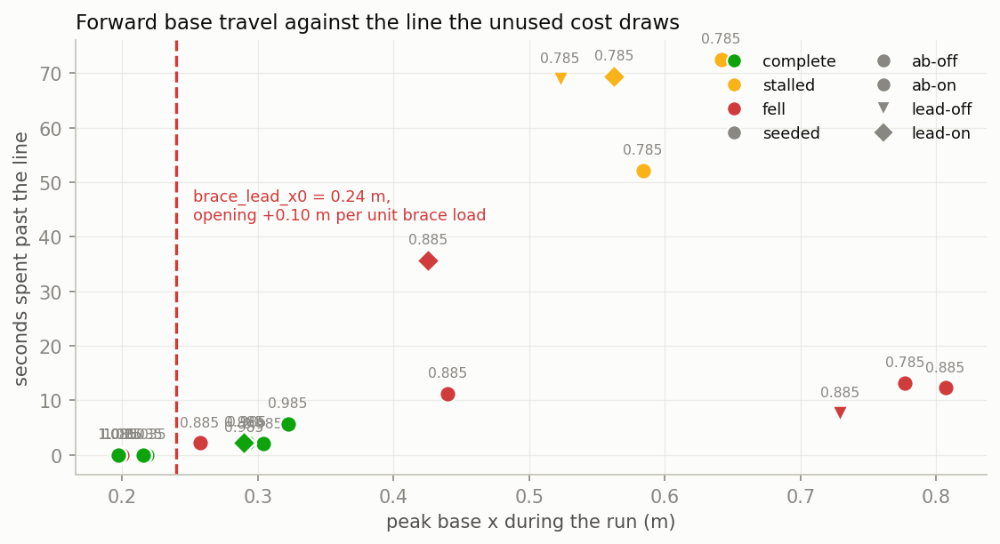
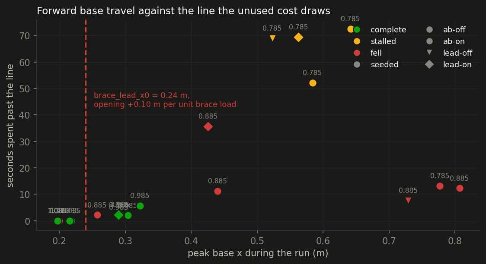
That is the separation the term was built to charge for, and it splits the same way with the retarget on. It is one number in the strategy JSON and needs no rebuild, which ranks it just below an existing model numeric.
| table face | complete off | complete on | in contact off | in contact on | forearm peak off (N) | forearm peak on (N) | t end off (s) | t end on (s) |
|---|---|---|---|---|---|---|---|---|
| 0.785 m | 0 / 3 | 0 / 3 | 22% | 1% | 133 | 51 | 75 | 75 |
| 0.885 m | 0 / 3 | 0 / 3 | 2% | 2% | 16 | 157 | 33 | 55 |
| 0.985 m | 3 / 3 | 3 / 3 | 26% | 26% | 221 | 242 | 42 | 43 |
brace_pose_track = 2 adds one constraint to the same solve: the reaching arm's jaw tip shifts by the same (face − compiled face) as the pads, and its seven joints join the selection. Offline the tip's error to the rung-2 target then reads 142–146 mm at every slab from 0.735 to 1.135 m — the value it has at the compiled height, where the reach cost closes it — against 121–371 mm with the arm frozen. The value on the numeric changes; nothing else does.
| table face | shipped | pose_track 2 | forearm peak (N) | t end (s) |
|---|---|---|---|---|
| 0.885 m | 0 / 3 | 0 / 1 | 201 | 34 |
table_contact_exclusive 1 → 2, which arms the preventive keep-off guard for every non-brace body over the slab footprint (the low-end failure with the pose correct is a drape, torso onto the wood at over 1 kN after the forearm has seated); and brace_target_slab 0 → 1 with brace_target_inset 0.05 → 0.11, which moves the brace x target off the body and onto the slab at the inset the keyframe already uses. At the re-solved pose the body-tied target still asks for 32–51 mm of extra forward travel at the low end. Both die if the completion count at 0.785 m, 0.885 m, 1.085 m does not move.sweep_ab.py --heights 0.735,1.135.target_ramp_sec 18 s, and the re-solved pose is up to 10° deeper in base pitch, so the commanded bow rate rises by about 40% at the low end while the ramp stays put. Whether that matters is one JSON edit and 3 seeds, and it needs no rebuild.